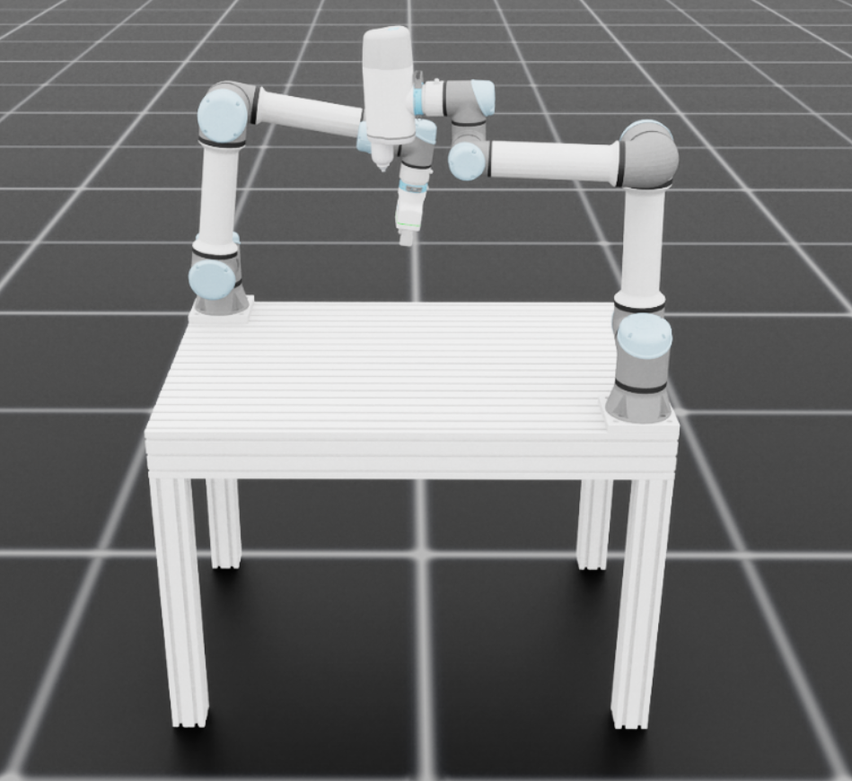

Template for Isaac Lab Project Woodworking
Overview
This is an external Isaac Lab project for the IDEALB Woodworking setup at ETHZ.

Installation
Installation has been tested with Isaac Sim 5.0.0 and Isaac Lab 2.2.1
Install Isaac Lab by following the installation guide. We recommend using the conda installation as it simplifies calling Python scripts from the terminal.
Clone or copy this project/repository separately from the Isaac Lab installation (i.e. outside the
IsaacLabdirectory):Using a python interpreter that has Isaac Lab installed, install the library in editable mode using:
```bash # use ‘PATH_TO_isaaclab.sh|bat -p’ instead of ‘python’ if Isaac Lab is not installed in Python venv or conda python -m pip install -e source/Woodworking_Simulation
Verify that the extension is correctly installed by:
Listing the available tasks:
Note: It the task name changes, it may be necessary to update the search pattern
"Template-"(in thescripts/list_envs.pyfile) so that it can be listed.# use 'FULL_PATH_TO_isaaclab.sh|bat -p' instead of 'python' if Isaac Lab is not installed in Python venv or conda python scripts/list_envs.pyRunning a task:
# use 'FULL_PATH_TO_isaaclab.sh|bat -p' instead of 'python' if Isaac Lab is not installed in Python venv or conda python scripts/<RL_LIBRARY>/train.py --task=<TASK_NAME>Running a task with dummy agents:
These include dummy agents that output zero or random agents. They are useful to ensure that the environments are configured correctly.
Zero-action agent
# use 'FULL_PATH_TO_isaaclab.sh|bat -p' instead of 'python' if Isaac Lab is not installed in Python venv or conda python scripts/zero_agent.py --task=<TASK_NAME>Random-action agent
# use 'FULL_PATH_TO_isaaclab.sh|bat -p' instead of 'python' if Isaac Lab is not installed in Python venv or conda python scripts/random_agent.py --task=<TASK_NAME>
Set up IDE
To setup the IDE, please follow these instructions:
- Run VSCode Tasks, by pressing
Ctrl+Shift+P, selectingTasks: Run Taskand running thesetup_python_envin the drop down menu. When running this task, you will be prompted to add the absolute path to your Isaac Sim installation.
If everything executes correctly, it should create a file .python.env in the .vscode directory. The file contains the python paths to all the extensions provided by Isaac Sim and Omniverse. This helps in indexing all the python modules for intelligent suggestions while writing code.
Import the Assets
Import Table
Put Assambly_Table.usd into the folder
source\Woodworking_Simulation\Woodworking_Simulation\tasks\manager_based\woodworking_simulation\asset\
Import ONrobot 2fg7 Gripper
Clone repository
git clone https://github.com/juandpenan/onrobot_2FG7_gripper_descriptionCreat main xacro file in urdf folder name it onrobot_2fg7_main.xacro and copy the follwoing into the empty file:
<?xml version="1.0"?> <robot xmlns:xacro="http://www.ros.org/wiki/xacro" name="onrobot_2fg7"> <!-- Add required properties --> <xacro:property name="control_bool" value="true"/> <xacro:property name="config" value="outwards"/> <!-- Include the gripper macro --> <xacro:include filename="onrobot_2fg7.xacro"/> <!-- Instantiate the gripper with correct parameter --> <xacro:onrobot_2fg7_gripper prefix="" finger_configuration="${config}"/> </robot>Replace the top part of onrobot_2fg7.xacro
<?xml version="1.0" ?> <robot name="2fg7_outwards" xmlns:xacro="http://www.ros.org/wiki/xacro"> <xacro:include filename="$(find onrobot_2fg7_description)/urdf/materials.xacro" /> <xacro:include filename="$(find onrobot_2fg7_description)/urdf/onrobot_2fg7.trans.xacro" /> <xacro:include filename="$(find onrobot_2fg7_description)/urdf/onrobot_2fg7.gazebo" /> <xacro:gripper_transmission/> <xacro:gazebo_control is_control_on="false" /> <xacro:macro name="onrobot_2fg7_gripper" params="prefix finger_configuration=outwards">and replace all 2fg7 with 2FG7 as xacro is case sensitive
Install xacro (do so in your isaac_lan env)
pip install git+https://github.com/ros/xacro.git@ros2Convert xacro to urdf
xacro onrobot_2fg7_main.xacro -o onrobot_2fg7_expanded.urdfThen start up isaac-sim and click file import and import the .urdf file this will creat a new subfolder in the urdf folder. The content of this subfolder has to be copied into the asset folder in isaac_lab